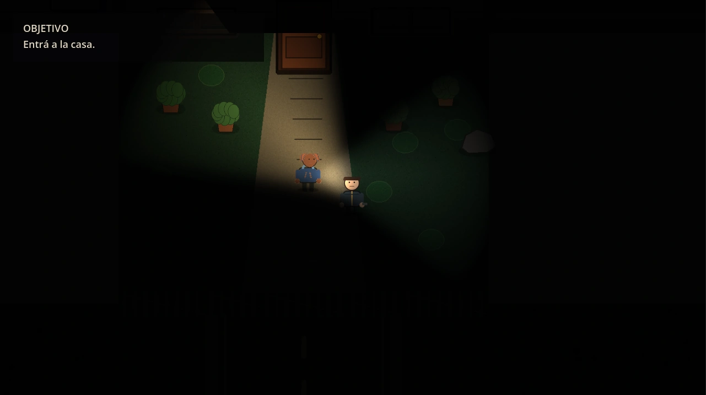
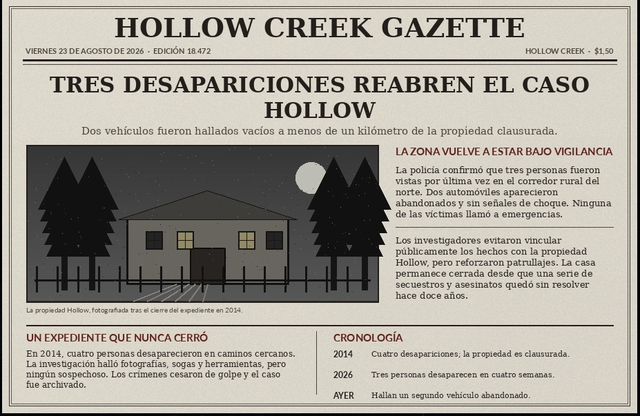

GALERÍA
La casa, vista desde dentro.
Capturas reales del proyecto, sin escenas generadas presentadas como gameplay. El material puede corresponder a versiones anteriores a la descarga actual.






DISPONIBLE PARA WINDOWS
Ya conoces el camino. Ahora entra.
El caso continúa dentro de Hollow House.